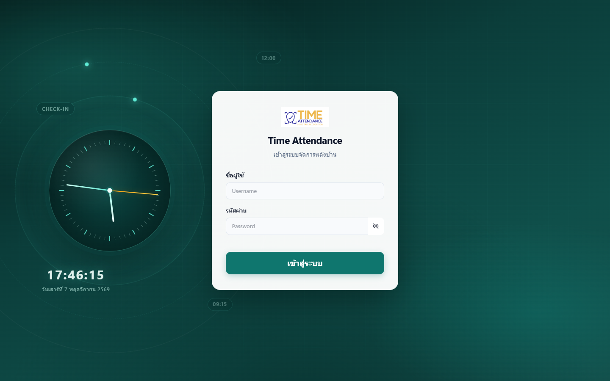
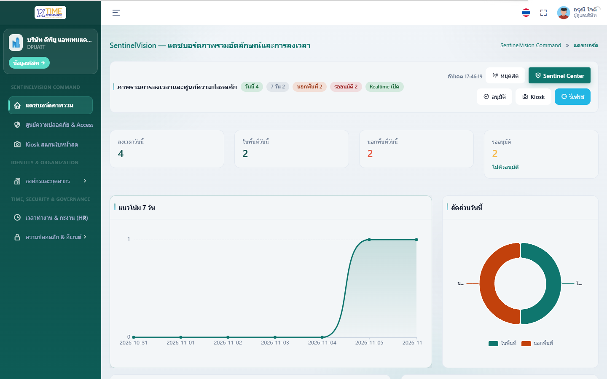
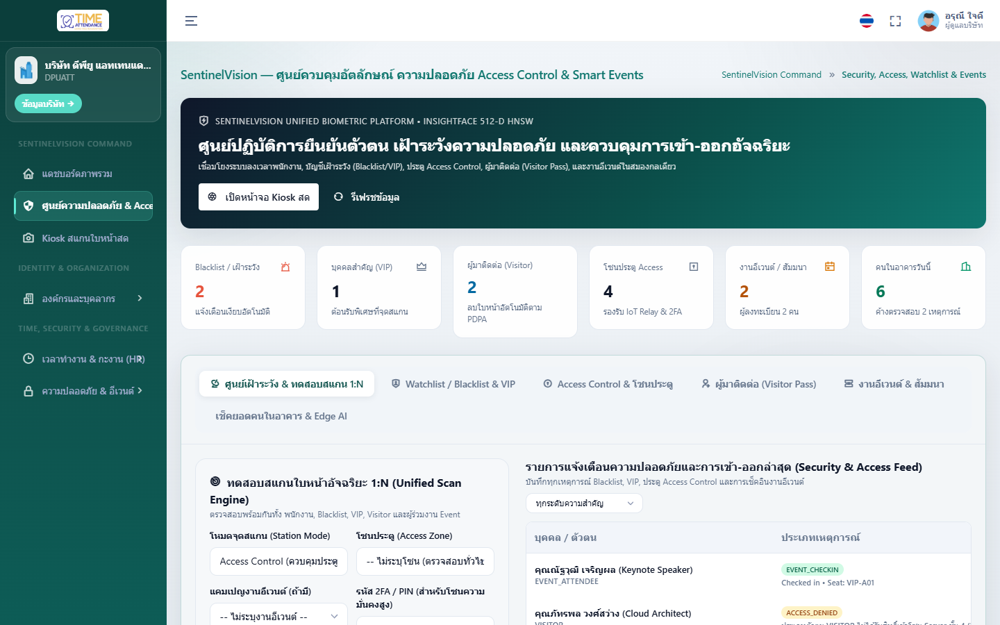
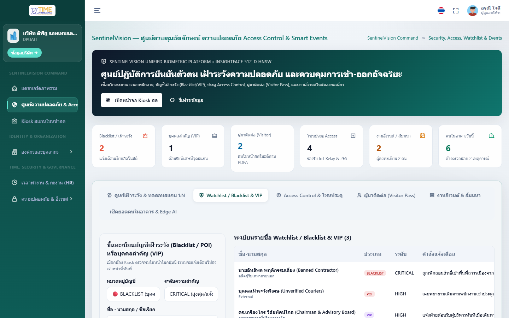
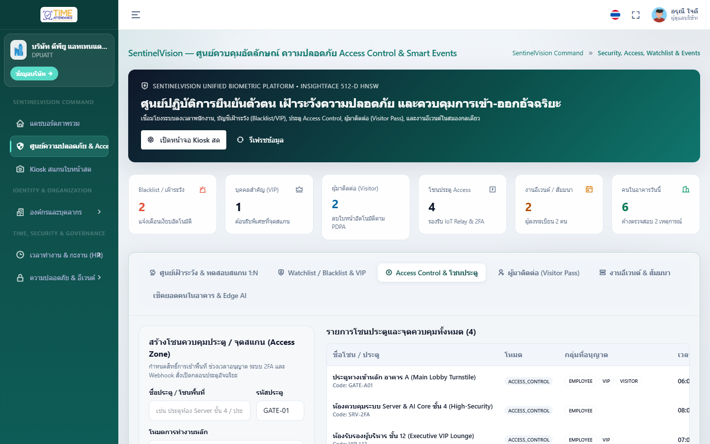
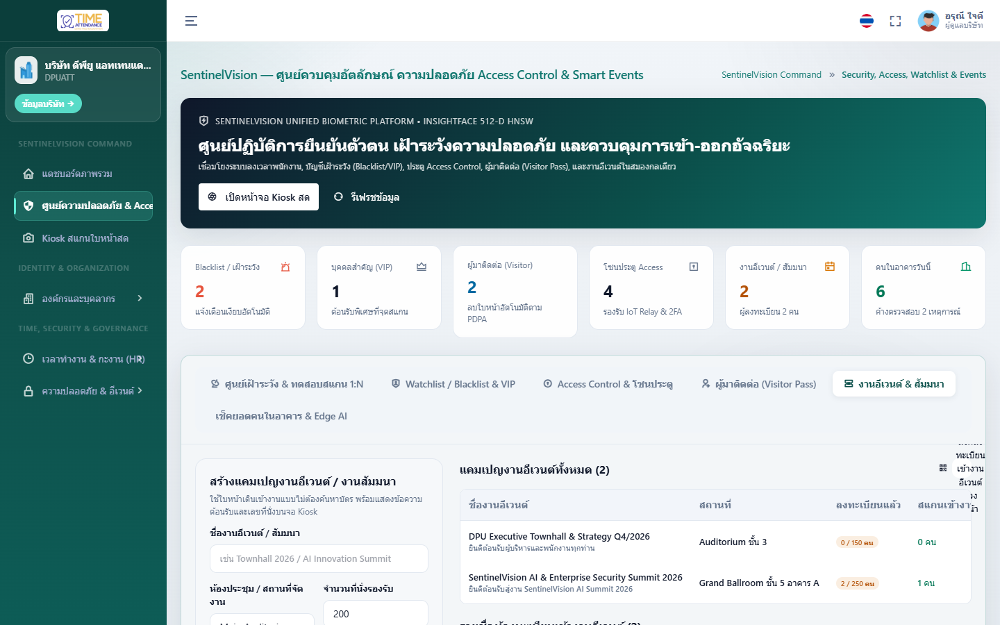
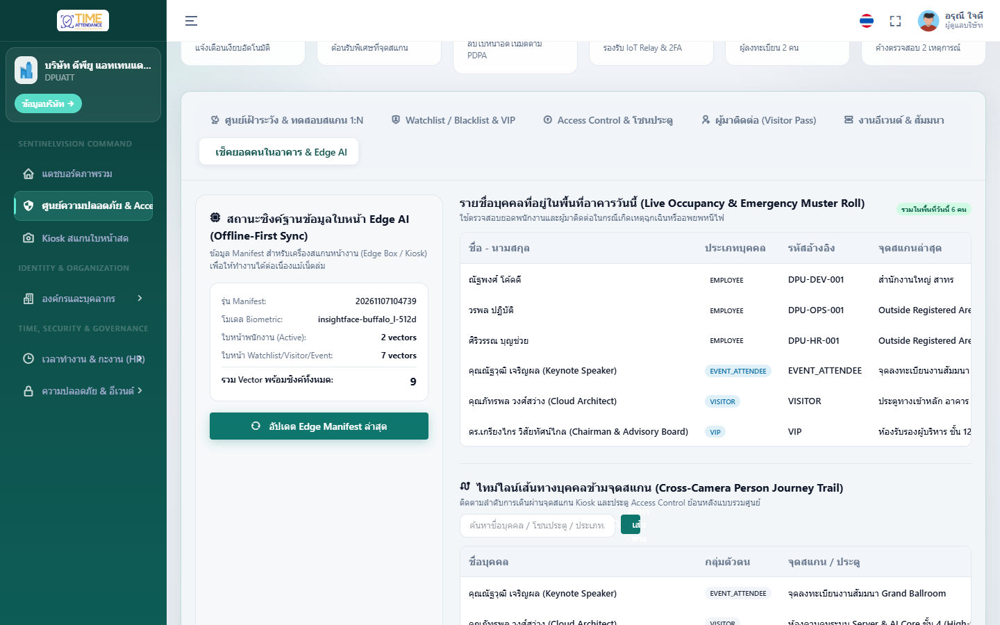
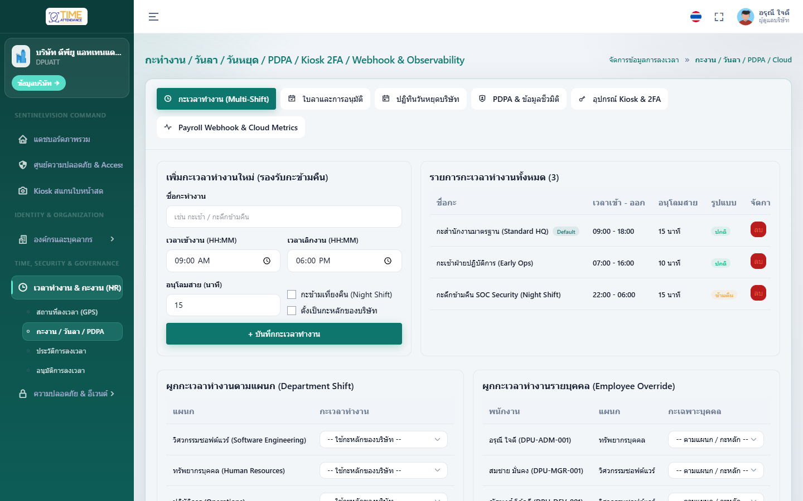
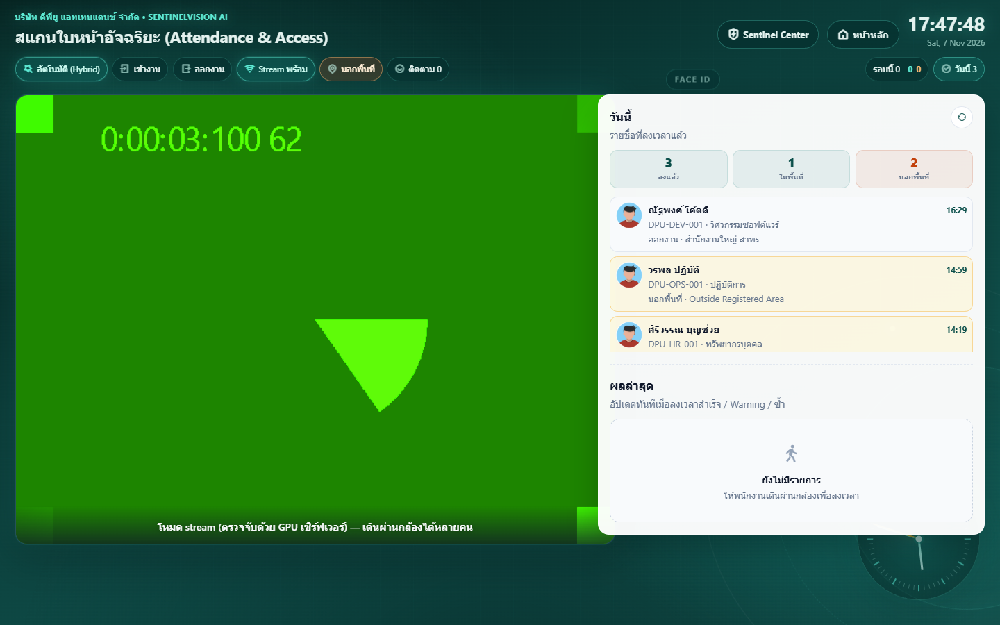

1. การเข้าสู่ระบบและเลือกองค์กร (Authentication & Multi-Tenancy)

- เปิดเบราว์เซอร์ไปที่หน้าเข้าสู่ระบบ (เช่น
http://localhost:8880/auth/login) - กรอกชื่อผู้ใช้และรหัสผ่าน (เช่น ผู้ดูแลองค์กร
admin/Password123!หรือผู้ดูแลระบบสูงสุดsysadmin/Password123!) - ระบบตรวจสอบสิทธิ์ JWT และแยกพื้นที่ข้อมูลตามองค์กร (Multi-Company Isolation) โดยอัตโนมัติ
2. แดชบอร์ดภาพรวมองค์กรและการลงเวลา (Executive Attendance Dashboard)

- แสดงสรุปจำนวนพนักงานทั้งหมด พนักงานที่ลงทะเบียนใบหน้าแล้ว และสถิติการเข้างานประจำวัน (ตรงเวลา / มาสาย / ลางาน)
- มีแบนเนอร์ทางลัดเข้าสู่ SentinelVision Security & Access Center ได้ในคลิกเดียว
3. ศูนย์บัญชาการ SentinelVision & ทดสอบสแกนใบหน้า 1:N (Command Center)

- แสดงตัวชี้วัดความปลอดภัยทั้ง 6 มิติ (Watchlist/Blacklist, VIP, Active Visitors, Access Zones, Events, In-Building Muster)
- Unified 1:N Biometric Simulator (ซ้าย): เลือกโซนประตูหรืออีเวนต์ แล้วอัปโหลดภาพใบหน้าเพื่อตรวจสอบสิทธิ์แบบ 1:N พร้อมแสดงผล
GRANT,DENY,ALERT_WATCHLISTหรือVIP_WELCOME - Real-Time Incident Feed (ขวา): ติดตามเหตุการณ์ล่าสุดและกดปุ่ม
Ackเพื่อรับทราบเหตุการณ์
4. การจัดการบัญชีเฝ้าระวัง Watchlist / Blacklist / VIP

- ลงทะเบียนบุคคลในกลุ่ม
BLACKLIST(บุคคลต้องห้าม),WATCHLIST(เฝ้าระวังพิเศษ) หรือVIP(แขกคนสำคัญ) พร้อมภาพถ่ายใบหน้า - ระบบสกัดเวกเตอร์ใบหน้า 512 มิติเก็บใน PostgreSQL
pgvectorทันที และแจ้งเตือนอัตโนมัติเมื่อพบหน้ากล้อง
5. การควบคุมประตูและโซนพื้นที่อัจฉริยะ (Smart Access Control Zones)

- สร้างโซนประตู กำหนดระดับความเข้มงวด (
LOWถึงCRITICAL) และกลุ่มบุคคลที่ได้รับอนุญาตให้ผ่าน - กดปุ่ม สั่งปลดล็อกประตู (Remote Unlock) เพื่อส่งสัญญาณเปิดประตูระยะไกลพร้อมบันทึก Audit Trail
6. ระบบบัตรผู้มาติดต่อด้วยใบหน้า & ลิงก์ลงทะเบียนล่วงหน้า (Visitor Face Pass)
- คัดลอก ลิงก์ลงทะเบียนล่วงหน้า (Self-Service Registration Link) ส่งให้ผู้มาติดต่อลงทะเบียนใบหน้าด้วยตนเอง
- หรือออกบัตร Visitor Pass หน้าเคาน์เตอร์พร้อมกำหนดชั่วโมงอนุญาต ระบบจะตัดสิทธิ์อัตโนมัติเมื่อหมดเวลา
7. การจัดการงานอีเวนต์และค้นหาที่นั่งด้วยใบหน้า (Smart Events & Seat Lookup)

- สร้างงานสัมมนา/อีเวนต์ และลงทะเบียนผู้เข้าร่วมงานพร้อมระบุหมายเลขโต๊ะ/ที่นั่ง (เช่น
VIP-A01) - เมื่อสแกนใบหน้าหน้างาน ระบบจะแสดงข้อความต้อนรับพร้อมหมายเลขที่นั่งและนับยอด Checked-In ทันที
8. บัญชีรวมพลฉุกเฉิน เส้นทางข้ามกล้อง และซิงก์ Edge AI (Muster Roll & Journey Trail)

- Emergency Muster Roll: ตรวจสอบรายชื่อพนักงานและผู้มาติดต่อที่ยังอยู่ในอาคารยามฉุกเฉิน
- Cross-Camera Person Journey Trail: ค้นหาไทม์ไลน์การเดินผ่านจุดสแกนต่างๆ ของบุคคลภายในองค์กร
- Edge AI Offline Sync: ดึง Manifest เวกเตอร์ใบหน้า 512 มิติไปแคชบนกล่อง Edge AI เพื่อทำงานแบบ Offline
9. การจัดการกะเวลาทำงาน วันหยุด การลา และ PDPA (HR Schedule & PDPA)

- กำหนดกะเวลาทำงาน (Work Shifts) เพื่อใช้คำนวณมาสายและ OT อัตโนมัติ
- จัดการปฏิทินวันหยุดประจำปี และอนุมัติ/ปฏิเสธใบลาของพนักงาน
10. จุดลงเวลาและตรวจสอบใบหน้าแบบกลุ่มเรียลไทม์ (Multi-Face WebSocket Kiosk)

- รองรับการตรวจจับและระบุตัวตนหลายใบหน้าพร้อมกันแบบเรียลไทม์ผ่าน WebSocket (
/face/ws/kiosk) - เชื่อมต่อกับระบบแจ้งเตือน Watchlist/Blacklist/VIP ของ SentinelVision โดยอัตโนมัติในทุกการสแกน